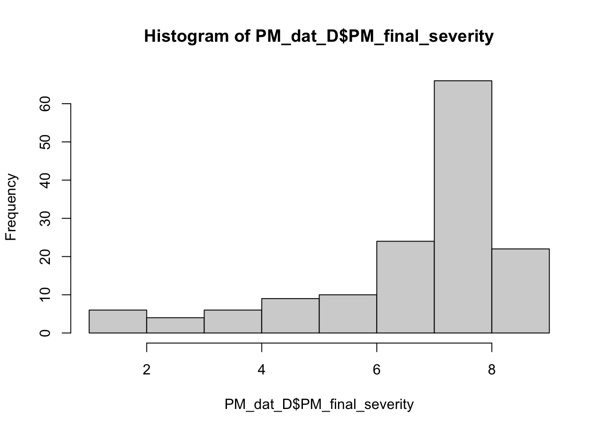
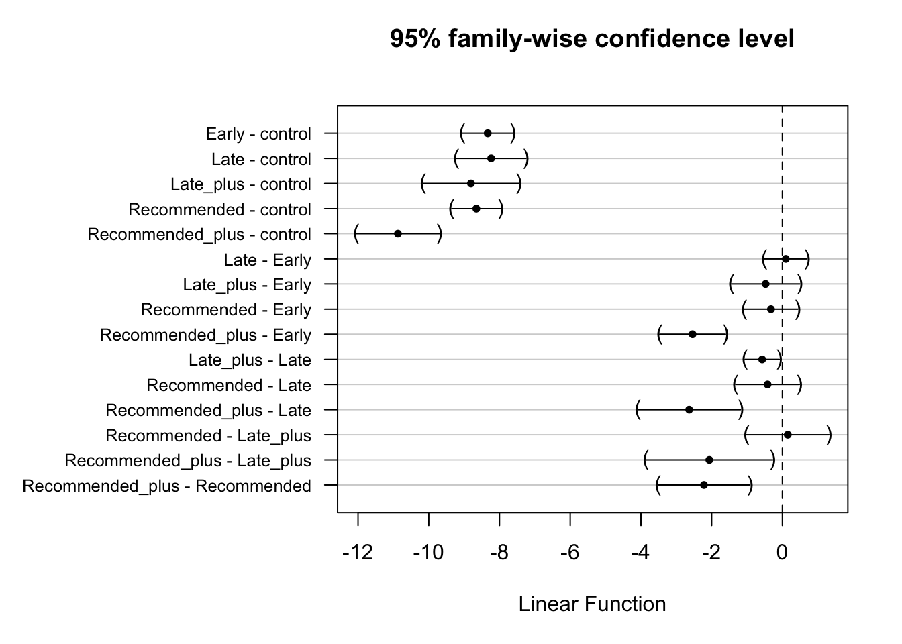

5 Powdery mildew severity Meta-analysis
Inspect for a normal distribution of disease severity

Let’s get started with the analysis by first finding the best model fit that answers our research question.
When, in relation to PM establishes in the crop, should farmers begin spraying mungbean to obtain the highest fungicide efficacy for lowering disease severity: before PM establishing, immediately after first sign of PM establishing, or after PM has become established in the crop.
A secondary question to this aim is: does a second spray increase the efficacy?
To do this, in our model:
Powdery mildew severity 1-9 scale
- Trial, which resolves combinations of categorical variables: year, location, row spacing, fungicide dose and cultivar; is set as a random intercept
5.0.1 Define Trial
PM_dat_D <-
PM_dat_D %>%
mutate(trial = paste(trial_ref,
year,
location,
host_genotype,
row_spacing,
sep = "_")) - We will investigate the effect size of our treatment - spray management,
******
5.1 Disease severity spray schedule meta-analysis
PMsev_mv <- rma.mv(
yi = PM_final_severity,
vi,
mods = ~ spray_management,
method = "ML",
random = list( ~ spray_management | trial, ~ 1 | id),
struct = "UN",
control = list(optimizer = "optim"),
data = PM_dat_D
)## Warning in rma.mv(yi = PM_final_severity, vi, mods = ~spray_management, : There
## are outcomes with non-positive sampling variances.## Warning in rma.mv(yi = PM_final_severity, vi, mods = ~spray_management, : 'V'
## appears to be not positive definite.## Warning: Some combinations of the levels of the inner factor never occurred.
## Corresponding rho value(s) fixed to 0.##
## Multivariate Meta-Analysis Model (k = 147; method: ML)
##
## logLik Deviance AIC BIC AICc
## -141.8960 Inf 337.7920 418.5336 350.4978
##
## Variance Components:
##
## estim sqrt nlvls fixed factor
## sigma^2 0.0367 0.1916 147 no id
##
## outer factor: trial (nlvls = 22)
## inner factor: spray_management (nlvls = 6)
##
## estim sqrt k.lvl fixed level
## tau^2.1 1.5387 1.2405 37 no control
## tau^2.2 3.1114 1.7639 13 no Early
## tau^2.3 0.8044 0.8969 15 no Late
## tau^2.4 0.0609 0.2468 13 no Late_plus
## tau^2.5 4.3670 2.0897 28 no Recommended
## tau^2.6 9.5330 3.0875 41 no Recommended_plus
##
## rho.cntr rho.Erly rho.Late rho.Lt_p rho.Rcmm rho.Rcm_
## control 1 0.9461 0.9847 0.9972 0.9450 0.8654
## Early 0.9461 1 0.9810 0.0000 0.8850 0.9806
## Late 0.9847 0.9810 1 0.9888 0.8986 0.9253
## Late_plus 0.9972 0.0000 0.9888 1 0.9524 0.8969
## Recommended 0.9450 0.8850 0.8986 0.9524 1 0.8158
## Recommended_plus 0.8654 0.9806 0.9253 0.8969 0.8158 1
## cntr Erly Late Lt_p Rcmm Rcm_
## control - no no no no no
## Early 7 - no yes no no
## Late 9 6 - no no no
## Late_plus 4 0 1 - no no
## Recommended 18 6 9 1 - no
## Recommended_plus 16 6 9 1 16 -
##
## Test of Moderators (coefficients 2:6):
## QM(df = 5) = 233.2206, p-val < .0001
##
## Model Results:
##
## estimate se zval pval ci.lb
## intrcpt 7.5456 0.2741 27.5283 <.0001 7.0083
## spray_managementEarly -0.7874 0.1941 -4.0562 <.0001 -1.1678
## spray_managementLate -0.6906 0.1154 -5.9851 <.0001 -0.9167
## spray_managementLate_plus -1.2617 0.2362 -5.3414 <.0001 -1.7246
## spray_managementRecommended -1.1094 0.2625 -4.2269 <.0001 -1.6238
## spray_managementRecommended_plus -3.3270 0.5144 -6.4680 <.0001 -4.3351
## ci.ub
## intrcpt 8.0828 ***
## spray_managementEarly -0.4069 ***
## spray_managementLate -0.4644 ***
## spray_managementLate_plus -0.7987 ***
## spray_managementRecommended -0.5950 ***
## spray_managementRecommended_plus -2.3188 ***
##
## ---
## Signif. codes: 0 '***' 0.001 '**' 0.01 '*' 0.05 '.' 0.1 ' ' 1All spray schedules were effective at lowering the disease severity at the end of the season
5.1.1 Disease severity moderator contrasts
source("R/simple_summary.R") #function to provide a table that includes the treatment names in the contrasts
contrast_Ssum <-
simple_summary(summary(glht(PMsev_mv, linfct = cbind(
contrMat(rep(1, 6), type = "Tukey")
)), test = adjusted("none")))
contrast_Ssum## contrast coefficients StdErr Zvalue
## 2 - 1 Early - control -8.33295773 0.2647003 -31.4807216
## 3 - 1 Late - control -8.23614870 0.3659956 -22.5034091
## 4 - 1 Late_plus - control -8.80722896 0.5020496 -17.5425465
## 5 - 1 Recommended - control -8.65495123 0.2573916 -33.6256134
## 6 - 1 Recommended_plus - control -10.87257210 0.4349590 -24.9967718
## 3 - 2 Late - Early 0.09680903 0.2225049 0.4350872
## 4 - 2 Late_plus - Early -0.47427123 0.3575994 -1.3262639
## 5 - 2 Recommended - Early -0.32199350 0.2806971 -1.1471207
## 6 - 2 Recommended_plus - Early -2.53961437 0.3450582 -7.3599602
## 4 - 3 Late_plus - Late -0.57108026 0.1800190 -3.1723338
## 5 - 3 Recommended - Late -0.41880253 0.3341950 -1.2531681
## 6 - 3 Recommended_plus - Late -2.63642339 0.5390716 -4.8906739
## 5 - 4 Recommended - Late_plus 0.15227773 0.4327553 0.3518795
## 6 - 4 Recommended_plus - Late_plus -2.06534314 0.6644980 -3.1081253
## 6 - 5 Recommended_plus - Recommended -2.21762087 0.4820528 -4.6003692
## pvals sig
## 2 - 1 0.000000e+00 ***
## 3 - 1 0.000000e+00 ***
## 4 - 1 0.000000e+00 ***
## 5 - 1 0.000000e+00 ***
## 6 - 1 0.000000e+00 ***
## 3 - 2 6.634991e-01
## 4 - 2 1.847523e-01
## 5 - 2 2.513318e-01
## 6 - 2 1.840750e-13 ***
## 4 - 3 1.512191e-03 **
## 5 - 3 2.101445e-01
## 6 - 3 1.004913e-06 ***
## 5 - 4 7.249286e-01
## 6 - 4 1.882782e-03 **
## 6 - 5 4.217428e-06 ***
par(mar = c(5, 13, 4, 2) + 0.1)
plot(glht(PMsev_mv, linfct = cbind(contrMat(rep(
1, 6
), type = "Tukey"))), yaxt = 'n')
axis(
2,
at = seq_along(contrast_Ssum$contrast),
labels = rev(contrast_Ssum$contrast),
las = 2,
cex.axis = 0.8
)
5.1.2 Meta-analysis summary table
# obtain number of treatments included in each moderator variable
k5 <-
as.data.frame(table(PM_dat_D$spray_management)) %>%
filter(Freq != 0) %>%
pull(Freq)
k6 <-
as.data.frame(table(PM_dat_D$trial_ref, PM_dat_D$spray_management)) %>%
filter(Freq != 0) %>%
group_by(Var2) %>%
summarise(n()) %>%
pull()
intercept <- round(PMsev_mv$b, 4)[1,1]
# create data.frame
results_mv <- data.frame(
Moderator = c(
"Intercept / No Spray control",
"Early",
"Late",
"Late+",
"Recommended",
"Recommended+"
),
N = k5,
k = k6,
Effect = round(PMsev_mv$b, 4),
se = round(PMsev_mv$se, 4),
CI_lower = round(PMsev_mv$ci.lb, 4),
CI_upper = round(PMsev_mv$ci.ub, 4),
z_val = round(PMsev_mv$zval, 4),
p_val = reportP(PMsev_mv$pval, AsNumeric = FALSE, P_prefix = FALSE),
eff_bar = round(1 -(intercept + PMsev_mv$b)/intercept,4)*100,
eff_CI_high = round(1 -(intercept + PMsev_mv$ci.ub)/intercept,4)*100,
eff_CI_low = round(1 -(intercept + PMsev_mv$ci.lb)/intercept,4)*100
)
# rename colnames to give table headings
colnames(results_mv)[c(1:4,6:12 )] <-
c("Moderator",
"N",
"k",
"mu",
"CI_{L}",
"CI_{U}",
"Z",
"P",
"Efficacy",
"Eff CI_lower",
"Eff CI upper")
disease_estimates_table <-
flextable(results_mv[c(2,5,6,3,4), c(1:4,6:7, 9:12)]) %>%
align(j = 2:10, align = "center", part = "all") %>%
fontsize(size = 8, part = "body") %>%
fontsize(size = 10, part = "header") %>%
italic(italic = TRUE, part = "header") %>%
set_caption(
"Table 3: Estimated powdery mildew severity mean difference ($u$) to the no spray control (intercept) for each spray schedule treatment. Estimates were calculated from a network meta-analysis of data obtained from grey literature reports of (k) field trials undertaken in Eastern Australia. P values indicate statistical significance in comparison to the intercept."
) %>%
autofit() %>%
footnote(
i = 1,
j = c(2:10),
value = as_paragraph(
c(
"number of treatment means categorised to each spray schedule",
"number of trials with the respective spray schedule",
"estimated mean yield determined by the meta-analysis",
"Lower range of the 95% confidence interval",
"Upper range of the 95% confidence interval",
"indicates the significance between each respective spray schedule and the no spray control (intercept)",
"Fungicide spray schedule efficacy",
"Lower range of the 95% confidence interval",
"Upper range of the 95% confidence interval"
)
),
ref_symbols = letters[c(1:7,4,5)],
part = "header",
inline = TRUE
)%>%
add_header(Moderator = "",
N = "",
k = "",
mu = "Effect Size",
`CI_{L}` = "Effect Size",
`CI_{U}` = "Effect Size",
P = "Effect Size",
Efficacy = "PM control",
`Eff CI_lower` = "PM control",
`Eff CI upper` = "PM control") %>%
merge_h( part = "header")%>%
hline_top(part="all", border = officer::fp_border(color = "black", width = 2) )
disease_estimates_tableEffect Size | PM control | ||||||||
Moderator | Na | kb | muc | CI_{L}d | CI_{U}e | Pf | Efficacyg | Eff CI_lowerd | Eff CI uppere |
Early | 13 | 3 | -0.7874 | -1.1678 | -0.4069 | < 0.0001 | 10.43 | 5.39 | 15.48 |
Recommended | 28 | 12 | -1.1094 | -1.6238 | -0.5950 | < 0.0001 | 14.70 | 7.88 | 21.52 |
Recommended+ | 41 | 11 | -3.3270 | -4.3351 | -2.3188 | < 0.0001 | 44.09 | 30.73 | 57.45 |
Late | 15 | 5 | -0.6906 | -0.9167 | -0.4644 | < 0.0001 | 9.15 | 6.15 | 12.15 |
Late+ | 13 | 2 | -1.2617 | -1.7246 | -0.7987 | < 0.0001 | 16.72 | 10.59 | 22.86 |
anumber of treatment means categorised to each spray schedule; bnumber of trials with the respective spray schedule; cestimated mean yield determined by the meta-analysis; dLower range of the 95% confidence interval; eUpper range of the 95% confidence interval; findicates the significance between each respective spray schedule and the no spray control (intercept); gFungicide spray schedule efficacy; dLower range of the 95% confidence interval; eUpper range of the 95% confidence interval | |||||||||
Save table to a word document to use in manuscript
Thompson, Sue. 2016. “Mungbeans Vs Fungus: Two Sprays for Optimum Control - Grains Research and Development Corporation.” Ground Cover, September. https://grdc.com.au/resources-and-publications/groundcover/ground-cover-issue-124-septemberoctober-2016/mungbeans-vs-fungus-two-sprays-for-optimum-control.
Viechtbauer, Wolfgang. 2010. “Conducting Meta-Analyses in R with the metafor Package.” Journal of Statistical Software 36 (3): 1–48. https://doi.org/10.18637/jss.v036.i03.